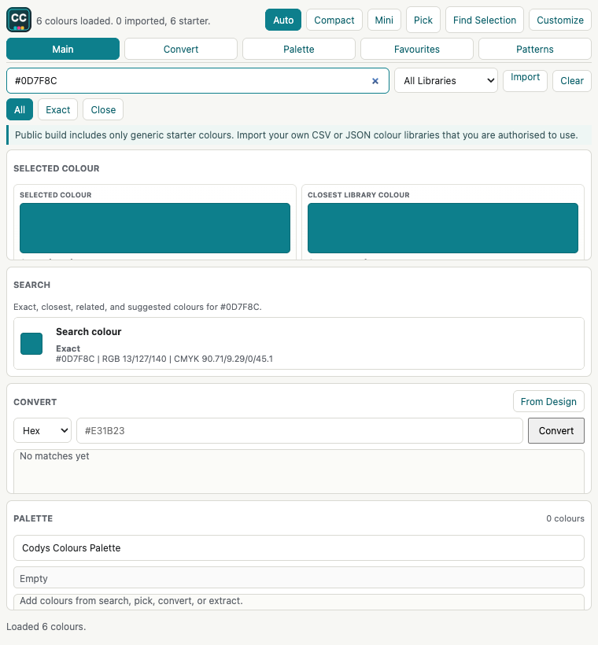

Search and compare
Find colours by name, code, suffix, or hex, then compare RGB, CMYK, Lab, source, and closest library matches.
A clean, free Adobe panel for searching, picking, converting, extracting, comparing, favouriting, and applying colours from libraries you import locally.
Codys Colours is not a bloated account app. It is a focused panel that sits inside Adobe and helps you get to the colour you need with fewer clicks.
Find colours by name, code, suffix, or hex, then compare RGB, CMYK, Lab, source, and closest library matches.
Use selected artwork or the picker flow to bring colours from your document into the panel and match them against your library.
Convert Hex, RGB, CMYK, and Lab inputs into closest library matches for practical production notes and design work.
Pull colours from images or selected artwork, save palettes, export palette visuals, and keep a local favourite list.
Add swatches, apply the selected colour, or place a colour square in Illustrator directly from the panel.
Import CSV or JSON libraries that you are authorised to use. The public build includes starter colours only.
The interface is built for compact Adobe side panels, with tabs, favourites, palette tools, colour stats, and scalable layouts.

The release ZIP includes the installer command, the signed ZXP, setup notes, licence, privacy note, and source files.
Grab the latest release from GitHub. The main download is free and packaged for macOS.
Unzip it, double-click Install Codys Colours.command, then restart Illustrator or Photoshop.
Use Window > Extensions (Legacy) > Codys Colours, then import your authorised CSV or JSON libraries.
Use it for personal work, school work, internal company work, and client projects. The public version costs $0.
Codys Colours uses the Codys Colours Free Use and Attribution License. You can use the plugin and outputs for free, including commercial design work, but nobody can sell, repackage, rename, white-label, mirror, or redistribute it as their own product without written permission.
Short version: yes, it is free. No, it does not ship protected commercial colour-guide databases. Yes, you can import your own authorised libraries.
Yes. It is free to download and use for personal, school, internal, commercial, and client work.
Yes. Commercial public use must keep visible credit to Codys Colours by Cody Harker.
No. The public build includes generic starter colours only. Import CSV or JSON libraries that you are authorised to use.
CSV or JSON libraries with fields such as Name, Hex, RGB, CMYK, Lab, Source, Suffix, and Alias.